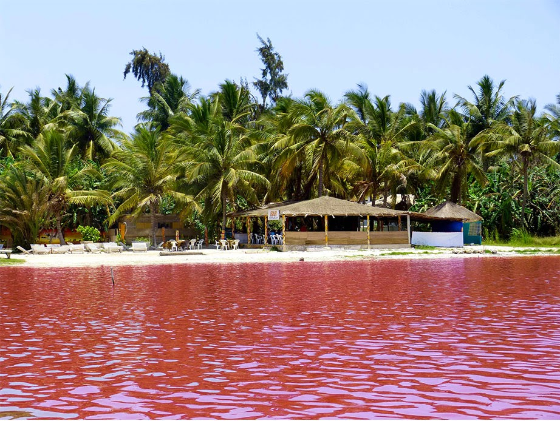
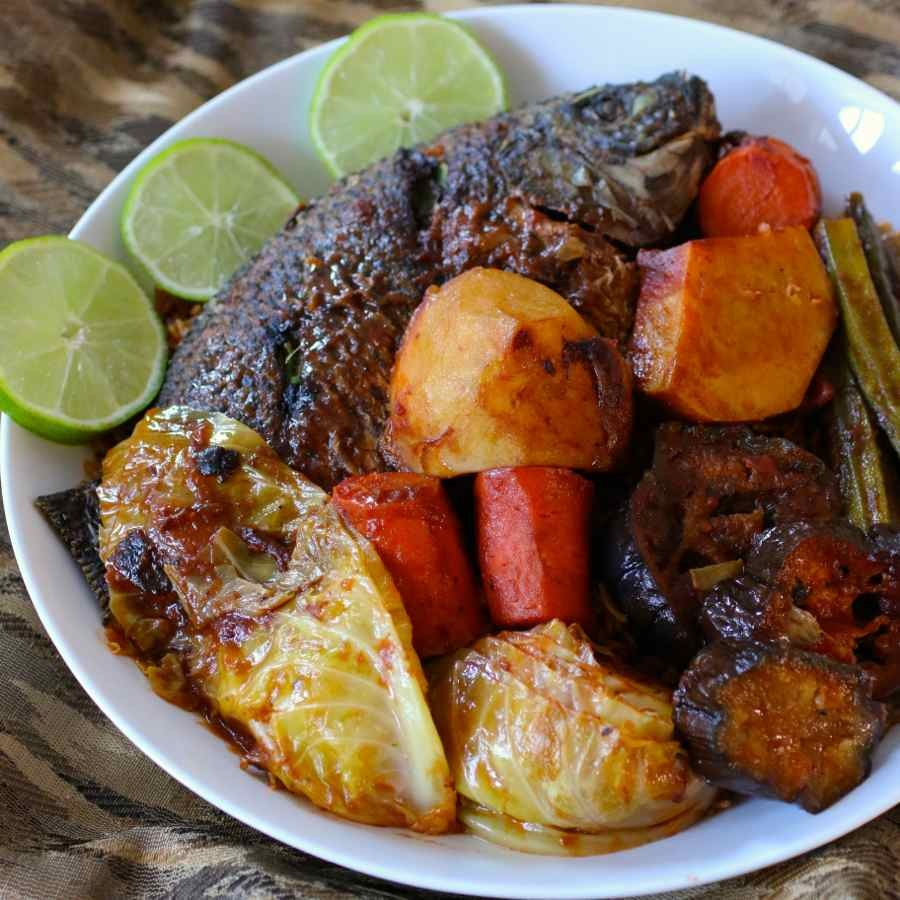

Bienvenue au Sénégal
Plongez dans l'univers captivant du Sénégal et laissez-vous émerveiller par ses trésors culturels, historiques et naturels. Ce pays d'Afrique de l'Ouest regorge de sites exceptionnels, témoins de son passé glorieux et de son patrimoine vivant. Des villes historiques comme Saint-Louis, avec son architecture coloniale et ses ruelles pittoresques, aux plages ensoleillées de la Petite-Côte, le Sénégal offre une diversité de paysages qui séduisent les voyageurs en quête d'authenticité et d'émotions.
Découvrez une culture profondément ancrée dans les traditions, où la musique, la danse, et l'artisanat occupent une place centrale. Chaque région du Sénégal dévoile des facettes uniques de son identité, que ce soit à travers les récits des griots, les cérémonies rituelles ou la cuisine locale savoureuse. Ce pays est également un paradis pour les amoureux de la nature, avec ses parcs nationaux abritant une faune et une flore remarquables, comme le Parc national de Niokolo-Koba ou le sanctuaire ornithologique du Djoudj.
Le Sénégal, c'est aussi un voyage dans l'histoire, avec des lieux emblématiques tels que l'île de Gorée, qui raconte les souffrances et la résilience des peuples africains. Que vous soyez à la recherche d'aventures palpitantes, d'une immersion culturelle ou simplement d'une escapade relaxante, le Sénégal saura vous charmer par sa diversité et l'hospitalité légendaire de ses habitants.
En savoir plus
Découvrir le Sénégal
Le Sénégal est un pays d'une beauté exceptionnelle, offrant une diversité culturelle et naturelle qui ne cesse de fasciner. Ce pays de l'Afrique de l'Ouest est reconnu pour ses paysages spectaculaires, allant des plages paradisiaques bordées de cocotiers aux vastes savanes dorées, en passant par des forêts luxuriantes et des mangroves mystérieuses. Chaque recoin du Sénégal raconte une histoire unique, imprégnée de traditions ancestrales et de valeurs profondément enracinées dans le respect et la solidarité.
L'île de Gorée, classée au patrimoine mondial de l'UNESCO, est un lieu incontournable pour comprendre l'histoire poignante de l'esclavage. Ce site historique transporte ses visiteurs dans une époque marquée par la douleur, mais aussi par la résilience et la force des peuples africains. Par ailleurs, le Sénégal est un véritable carrefour ethnique où cohabitent harmonieusement les Wolofs, les Sérères, les Diolas et bien d'autres communautés, chacune apportant une richesse inestimable à la culture nationale.
Les traditions sénégalaises se manifestent dans la musique, la danse, les tenues colorées et les cérémonies rituelles qui rythment la vie quotidienne. De la chaleur humaine des habitants à l'art de la "teranga" (hospitalité légendaire sénégalaise), le pays offre une expérience inoubliable, tant pour les amateurs de découvertes culturelles que pour les passionnés d'aventure et de nature.
Destinations populaires
Dakar
Découvrez la capitale animée du Sénégal, ses marchés colorés comme Sandaga, la Corniche avec vue sur l’océan et ses musées fascinants comme celui des Civilisations Noires.
Saint-Louis
Explorez cette ville historique classée au patrimoine mondial de l’UNESCO, avec ses maisons coloniales colorées et son ambiance artistique unique.
Casamance
Admirez les paysages verdoyants de cette région, découvrez les traditions des Diolas et détendez-vous sur les plages de Cap Skirring.

Lac Rose
Un lieu naturel emblématique, connu pour sa couleur rose unique due à sa forte concentration en sel.
Activités
Que vous aimiez l’aventure, la détente ou la culture, le Sénégal a des activités pour tout le monde. Voici quelques idées :
Faire un safari dans le parc national de Niokolo-Koba.
Explorer le delta du Saloum en pirogue.
Participer à des festivals comme le festival de Jazz de Saint-Louis.
Se relaxer sur les plages de Dakar ou de Cap Skirring.
Gastronomie
La cuisine sénégalaise est riche et savoureuse. Voici quelques plats à ne pas manquer :
